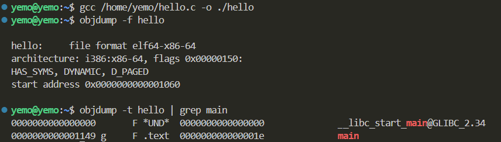

HW1
PB21111686_赵卓
T1. 操作系统的三个主要作用是什么？
- 是用户与计算机硬件系统之间的接口，包括命令接口，图形编程接口，编程接口。
- 是计算机资源的管理者，包括处理机，存储器，I/O设备，文件。
- 可用于扩充机器，包括虚拟机，增强层次性。
T2. 从开机开始，简要说明计算机系统是如何一步一步启动操作系统的。
- 按下开机按键，计算机硬件开始接受电源供电运行。
- 接着从地址0xFFFFFFF0处开始运行。
- 然后BIOS程序开始运行，进行硬件配置检测。
- 接着进行一系列预先准备的进程。
- 最后等待中断，进行中断驱动。
T3. 按照ppt中的helloworld源代码，生成可执行文件，请给出该文件的入口地址，并给出main函数的地址，这两个地址是同一个吗？为什么？
- 在linux系统中编译helloworld源码，并使用objdump指令查看入口地址和main函数地址，结果如下：

由此可知不是同一个地址，因为操作系统不能直接调用main函数，因为main函数执行需要初始化设置，这些设置由启动代码完成，因此操作系统会先调用启动代码，然后调用main函数。
T4. 根据你的理解，从命令行运行helloworld程序到该程序运行结束，需要哪些功能的支持？
- 需要操作系统，编译器，链接器，CPU等多方组件的共同完成。
T5. 名词解释：脱机I/O（目的、方法）。
- 目的：解决人机矛盾（人工操作方式与机器利用率之间的矛盾）和CPU与I/O设备之间速度不匹配的矛盾。
- 方法：利用低速的外围机进行，纸带（卡片）→磁带（磁盘），程序和数据都脱离主机，在外围机控制下进行。
T6. 名词解释：2阶段调度（2-phrase of scheduling），哪2阶段？
- 第一阶段：初步调度或预调度。在这个阶段，调度器会进行初步的资源分配和任务排序。这可能涉及到对任务或进程的优先级评估、资源需求的预测和初步分配。预调度的目的是为下一阶段的详细调度提供一个基础或框架。
- 第二阶段：执行调度或详细调度。在初步调度完成后，详细调度阶段会进行更为精确的任务分配和执行顺序确定。这可能包括考虑实时条件、资源可用性、任务之间的依赖关系等。详细调度的目标是确保任务能够在满足约束条件的情况下高效执行。